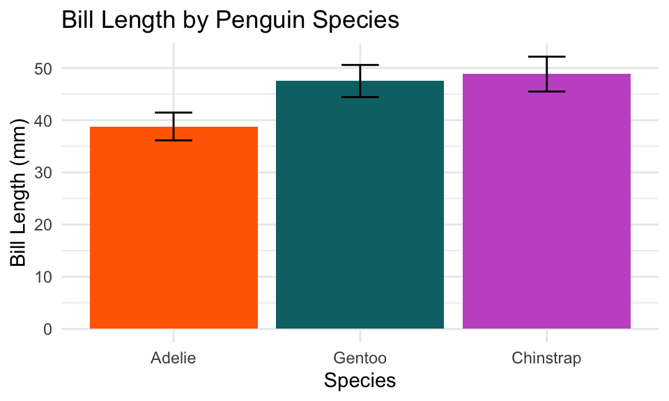
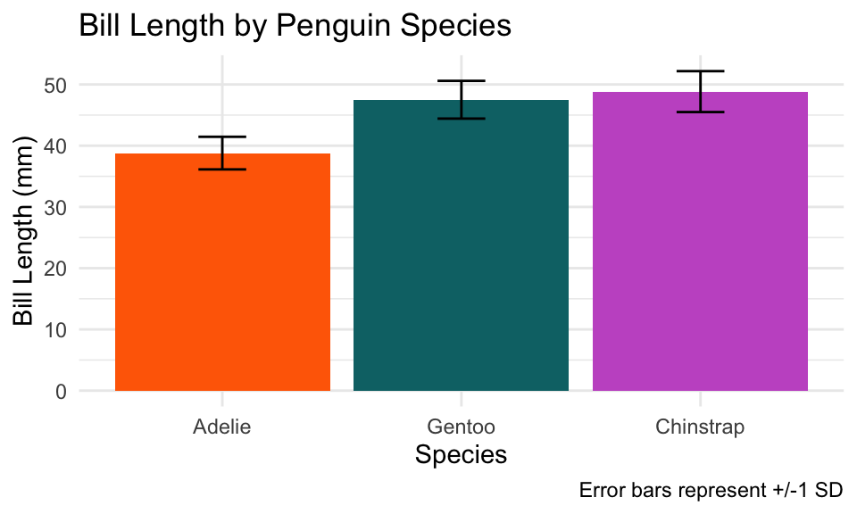
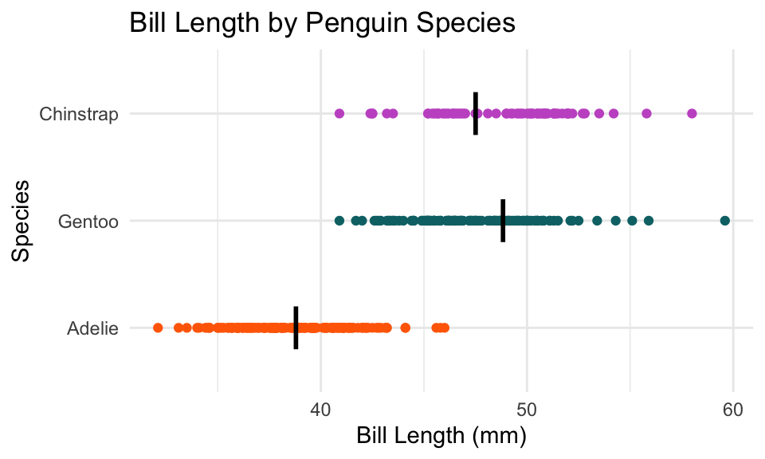
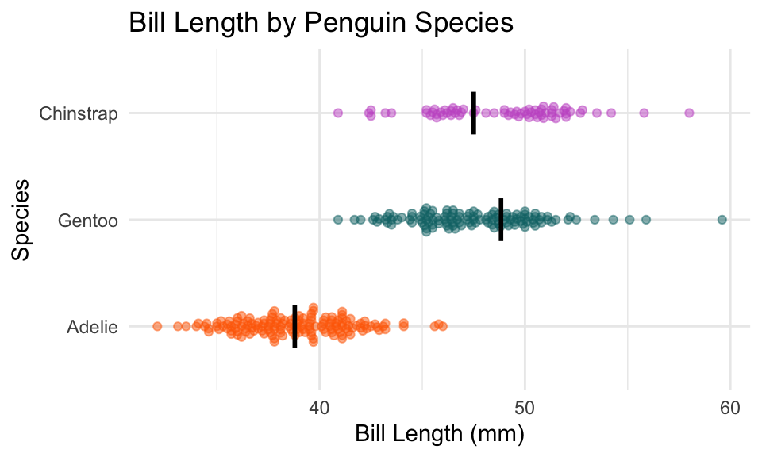
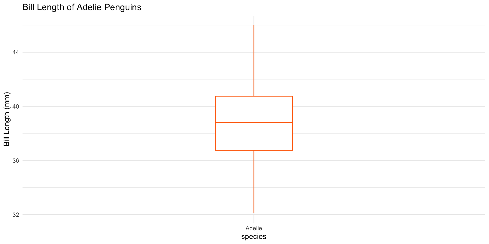
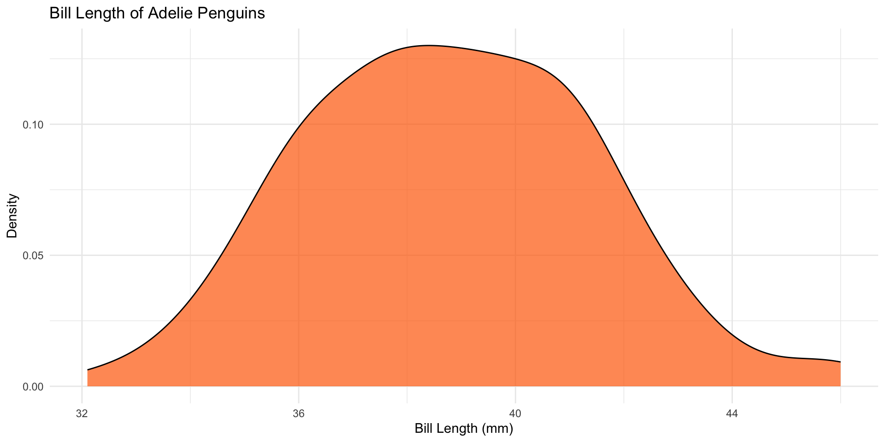
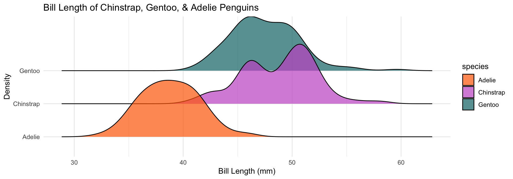
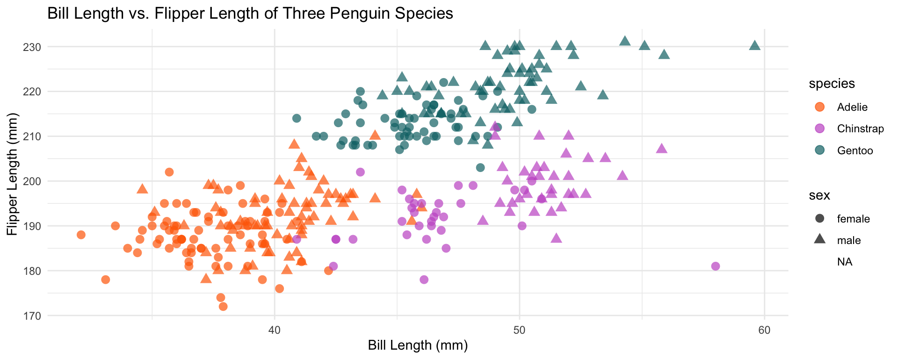

Warning: Removed 2 rows containing missing values or values outside the scale range
(`geom_col()`).Week 6 - STEM 691
Visual Storytelling: Distributions and Associations
Dr. Kelly Boles & Dr. Zhen Xu
Weekly Check In/
Download .zip for Wk 6 & Mini-Project #1
Start Recording
Today’s Agenda
- Weekly Check In
- Review/ Foundational Skills
- Distributions & Associations
- Single Distributions
- Histograms
- Box Plot
- Density Plot
- Multiple Distributions
- Ridgeline Plots
- Violin Plots
- Associations
- Scatterplots
- Single Distributions
- Which
geomwhen? - Looking Ahead
- Intro to Mini Project #1
- Collaborative Work
Norms
| In person norms | And also, for online learning… |
|---|---|
| Be fully present to each other & the work. | Keep your video on when possible. In large groups, mute your microphone when not talking. Close/mute/minimize other apps and devices to avoid distraction. |
| Assume positive intent & also take responsibility for the impact you have. | Remember online interaction masks even more of the full story. Notice when you are making assumptions, and seek information to check them. |
| Embrace collaboration. | Use the gallery view so you can see everyone. Use breakout groups as an opportunity to collaborate. |
| Be open to learning and accept non-closure. | Expect the inevitable technical glitches and learning curves. Exercise patience with one another. |
| Be aware of when to step up and step back. When stepping back, do so as an active listener. | Try out different modes of participation. Step back by making space for others to engage in these. |
| Land your plane–get to the point you intended. | We all know how hard it is to be talked at, especially in a Zoom session, so let’s keep it to a minimum. |
Review/
Foundational Skills
AHH, tidykids!
AHH, tidykids!
- This dataset is a little trickier than what we’ve worked with before
- It has multiple:
- years,
- states,
- expenditure types!
filter()is your friend!
- It has multiple:
AI Policy Review
AI Policy Review
From the syllabus: “I acknowledge the use of [Generative AI Tool Name] in the preparation of this answer. Within this question, Generative AI was used to resolve the following problem: [state problem addressed here]. Specifically this code was informed by Generative AI: [copy and paste piece(s) of code provided by Generative AI here].”
- Many of you are doing this well! Keep it up!
- All acknowledgements are by question rather than whole assignment.
The Importance of na.rm=T
The Importance of na.rm=T
Assignment 4, Bonus Question: Which type of adjusted spending per child, on average in $1,000s, is highest for Tennessee?
Showing Amounts + Variability
Showing Amounts + Variability
- There are studies that show viewers/readers have a difficult time understanding how to interpret amounts well (especially measures of center)
- A Solution: Show variability in addition to the amount
Comparing Amounts: geom_point()
#acknowledging within-group variability with +/- 1 SD error bars
penguins |>
group_by(species) |>
summarize(avg_bill_length = mean(bill_length_mm, na.rm=T),
sd_bill_length = sd(bill_length_mm, na.rm=T)) |>
ungroup() |>
mutate(species = fct_reorder(species, avg_bill_length)) |>
ggplot(aes(x = species, y = avg_bill_length)) +
geom_col(aes(fill=species)) +
geom_errorbar(aes(ymin = avg_bill_length - sd_bill_length,
ymax = avg_bill_length + sd_bill_length), width = 0.2)+
coord_flip() +
labs(title = "Bill Length by Penguin Species",
x = "Species",
y = "Bill Length (mm)") +
scale_fill_manual(values = c("Chinstrap" = "#C65CCB",
"Gentoo" = "#077175",
"Adelie" = "#FF6A01")) +
theme_minimal() +
theme(legend.position = "none")
# `geom_point()` gives us overplotting but acknowleges each datum
penguin_means <- penguins |>
group_by(species) |>
summarize(mean_bill_length = mean(bill_length_mm, na.rm = TRUE)) |>
ungroup()
penguins |>
mutate(species = fct_relevel(species, "Adelie", "Gentoo", "Chinstrap")) |>
ggplot(aes(x = species, y = bill_length_mm)) +
geom_point(aes(color=species)) +
geom_segment(data=penguin_means,
aes(x = as.numeric(species) - 0.2, xend = as.numeric(species) + 0.2,
y = mean_bill_length, yend = mean_bill_length),
color = "black", linewidth = 1)+
coord_flip() +
labs(title = "Bill Length by Penguin Species",
x = "Species",
y = "Bill Length (mm)") +
scale_color_manual(values = c("Chinstrap" = "#C65CCB",
"Gentoo" = "#077175",
"Adelie" = "#FF6A01")) +
theme_minimal() +
theme(legend.position = "none")
geom_jitter()
# `geom_jitter()` randomly moves points small bits along x and y to avoid overplotting
penguin_means <- penguins |>
group_by(species) |>
summarize(mean_bill_length = mean(bill_length_mm, na.rm = TRUE)) |>
ungroup()
penguins |>
mutate(species = fct_relevel(species, "Adelie", "Gentoo", "Chinstrap")) |>
ggplot(aes(x = species, y = bill_length_mm)) +
geom_jitter(aes(color=species), width = .18, alpha = .5) +
geom_segment(data=penguin_means,
aes(x = as.numeric(species) - 0.2, xend = as.numeric(species) + 0.2,
y = mean_bill_length, yend = mean_bill_length),
color = "black", linewidth = 1)+
coord_flip() +
labs(title = "Bill Length by Penguin Species",
x = "Species",
y = "Bill Length (mm)") +
scale_color_manual(values = c("Chinstrap" = "#C65CCB",
"Gentoo" = "#077175",
"Adelie" = "#FF6A01")) +
theme_minimal() +
theme(legend.position = "none")
geom_beeswarm()
# `geom_beeswarm()` systematically arranges points as close as possible
# to avoid overplotting
library(ggbeeswarm)
penguin_means <- penguins |>
group_by(species) |>
summarize(mean_bill_length = mean(bill_length_mm, na.rm = TRUE)) |>
ungroup()
penguins |>
mutate(species = fct_relevel(species, "Adelie", "Gentoo", "Chinstrap")) |>
ggplot(aes(x = species, y = bill_length_mm)) +
geom_beeswarm(aes(color=species), alpha = .5) +
geom_segment(data=penguin_means,
aes(x = as.numeric(species) - 0.2, xend = as.numeric(species) + 0.2,
y = mean_bill_length, yend = mean_bill_length),
color = "black", linewidth = 1)+
coord_flip() +
labs(title = "Bill Length by Penguin Species",
x = "Species",
y = "Bill Length (mm)") +
scale_color_manual(values = c("Chinstrap" = "#C65CCB",
"Gentoo" = "#077175",
"Adelie" = "#FF6A01")) +
theme_minimal() +
theme(legend.position = "none")Distributions & Associations
Single Plots
Single Plots: geom_histogram()
- What is a histogram?
- In
geom_histogram(), you most typically use the following arguments:aes(x = variable)binwidth = ?ORbins = ?
penguins |>
filter(species == "Adelie") |>
ggplot(aes(x = bill_length_mm)) +
geom_histogram(binwidth=1.5, fill = "#FF6A01", color = "black") +
theme_minimal() +
labs(title = "Bill Length of Adelie Penguins",
x = "Bill Length (mm)",
y = "Count") +
theme(legend.position = "none")
\[\text{Freedman-Diaconis Rule: Bin Width} = \frac{2 * IQR}{\sqrt[3]{n}}\]
Single Plots: geom_boxplot()
- What is a boxplot?

- In
geom_boxplot(), you most typically use the following arguments:aes(x = cat_variable, y = quant_variable)
geom_boxplot() + geom_jitter()
- What is a boxplot?
- In
geom_boxplot(), you most typically use the following arguments:aes(x = cat_variable, y = quant_variable)
penguins |>
filter(species == "Adelie") |>
ggplot(aes(x = species, y = bill_length_mm)) +
geom_boxplot(width = 0.2, color = "#FF6A01") +
geom_jitter(width = 0.08, alpha = 0.4, color = "#FF6A01", size = 1) +
theme_minimal() +
labs(title = "Bill Length of Adelie Penguins",
y = "Bill Length (mm)") +
theme(legend.position = "none")
Single Plots: geom_density()
- Similar to something you may recognize:
- Estimates the shape of the sample distribution
- Area under curve = 1
- You can calculate what % of each part of distribution is in a certain range
- Better for large datasets; amount of data in tails may be exaggerated in small datasets
- Y axis is hard from some audiences to interpret
Multiple Plots
Multiple Plots: geom_density()
- You may want to compare distributions across groups
penguins |>
ggplot(aes(x = bill_length_mm)) +
geom_density(aes(fill = species),color = "black", alpha = .7) +
theme_minimal() +
labs(title = "Bill Length of Chinstrap, Gentoo, & Adelie Penguins",
x = "Bill Length (mm)",
y = "Density") +
scale_fill_manual(values = c("Chinstrap" = "#C65CCB",
"Gentoo" = "#077175",
"Adelie" = "#FF6A01"))
Multiple Plots: Ridgeline
- To increase clarity, you may want to use a ridgeline plot
- This is a type of density plot that stacks the densities on top of each other
- Can compare without overlap
library(ggridges)
penguins |>
ggplot(aes(x = bill_length_mm, y=species)) +
geom_density_ridges(aes(fill = species),color = "black", alpha = .7) +
theme_minimal() +
labs(title = "Bill Length of Chinstrap, Gentoo, & Adelie Penguins",
x = "Bill Length (mm)",
y = "Density") +
scale_fill_manual(values = c("Chinstrap" = "#C65CCB",
"Gentoo" = "#077175",
"Adelie" = "#FF6A01"))Multiple Plots: geom_violin()
- Blend of boxplot and density plot
- Shows the distribution of the data
- May suggest data exists where it doesn’t
penguins |>
ggplot(aes(x = bill_length_mm, y=species)) +
geom_violin(aes(fill = species),color = "black", alpha = .7) +
geom_jitter(width = 0.08, alpha = 0.4, color = "black", size = 1) +
theme_minimal() +
theme(legend.position = "none") +
labs(title = "Bill Length of Chinstrap, Gentoo, & Adelie Penguins",
x = "Bill Length (mm)",
y = "Density") +
scale_fill_manual(values = c("Chinstrap" = "#C65CCB",
"Gentoo" = "#077175",
"Adelie" = "#FF6A01")) +
coord_flip()
Associations
Scatterplot: geom_point()
penguins |>
ggplot(aes(x = bill_length_mm, y = flipper_length_mm)) +
geom_point(aes(color = species), alpha = .7, size=3) +
scale_color_manual(values = c("Chinstrap" = "#C65CCB",
"Gentoo" = "#077175",
"Adelie" = "#FF6A01"))+
theme_minimal()+
labs(title = "Bill Length vs. Flipper Length of Three Penguin Species",
x = "Bill Length (mm)",
y = "Flipper Length (mm)")Scatterplot: geom_point()
- Can map a third variable to
shape
penguins |>
ggplot(aes(x = bill_length_mm, y = flipper_length_mm)) +
geom_point(aes(color = species, shape=sex), alpha = .7, size=3) +
scale_color_manual(values = c("Chinstrap" = "#C65CCB",
"Gentoo" = "#077175",
"Adelie" = "#FF6A01"))+
theme_minimal()+
labs(title = "Bill Length vs. Flipper Length of Three Penguin Species",
x = "Bill Length (mm)",
y = "Flipper Length (mm)")Scatterplot: geom_point()
- Can map a third variable to
shapeorsize
penguins |>
ggplot(aes(x = bill_length_mm, y = flipper_length_mm)) +
geom_point(aes(color = species, size= body_mass_g), alpha = .7) +
scale_color_manual(values = c("Chinstrap" = "#C65CCB",
"Gentoo" = "#077175",
"Adelie" = "#FF6A01"))+
theme_minimal()+
labs(title = "Bill Length vs. Flipper Length of Three Penguin Species",
x = "Bill Length (mm)",
y = "Flipper Length (mm)")
Scatterplot: geom_point()
- Add a trendline, correlation coefficient, and p-value
library(ggpubr)
penguins |>
ggplot(aes(x = bill_length_mm, y = flipper_length_mm, color=species)) +
geom_point(aes(size=body_mass_g), alpha = .7) +
stat_cor()+
geom_smooth(method="lm")+
scale_color_manual(values = c("Chinstrap" = "#C65CCB",
"Gentoo" = "#077175",
"Adelie" = "#FF6A01"))+
theme_minimal()+
labs(title = "Bill Length vs. Flipper Length of Three Penguin Species",
x = "Bill Length (mm)",
y = "Flipper Length (mm)")Which geom_ when?
Which geom_ when?
- When to use columns or bars?
- Visualizing amounts across categories
- Stacking: Useful when the sum of the amounts represented by the bars if of interest
- Dodging (grouping): Useful when we want to draw out comparisons within a category
- Faceting: Useful in similar cases as dodging
- When to use points?
- associations between x and y (and z)
- certain amounts (when the bars are all similar lengths)
- for time-related data
- When to use histograms, density plots, and the like?
- to visualize the distribution of data
- can also be used to visualize multiple distributions
Looking Ahead
Looking Ahead:
- Readings:
- Wilke (2019), Chapters 13-14
- Skim plots in Schwabish (2021), Chapter 5
- Weekly Assignment:
- Graphing Distributions and Scatterplots
- Note: New Data + A Little Cleaning
- Graphing Distributions and Scatterplots
Stop Recording
Start New Recording
Mini-Project #1
Mini-Project #1
- Data from the U.S. News and World Report National University Rankings
- Step 1: Explore
Think about the scavenger hunt from a few assignments ago. What variables do you have? What does each row represent? - Step 2: Clean
Use {dplyr} to clean the data set and prepare it for further analysis. - Step 3: Summarize
Wrangle the data to get it into the format needed to answer two RQs of your choosing. - Step 4: Visualize
Create two visualizations to answer your RQs.
Due: October 8th, 11:59 PM
Mini-Project #1
- Rubric:
- Knits without errors
- Functions to explore/wrangle the data are used correctly
- Data wrangling answers the research questions that are posed
- The information each visualization conveys is clear
- Each viz meets the requirements set out in the
.qmd- Custom color
- Use a theme
- Use
labs
- Complete reflections
- Pose/answer at least one question in the Slack channel
Collaborative Work
Collaborative Work
- Explore the mini-project together!
- Load in the data and review it
- Specifically, focus on:
- What the data looks like
- What the variables are
- The cleaning that needs to be done
- This is a discussion (planning) session. No need to write code.
- In whole group, we will discuss the data cleaning. Make sure one person from your group is prepared to share the data cleaning steps you discussed.
Have a Great Week!
UTK Educational Data Science